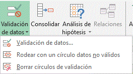

Validación de datos
La validación de datos nos permite asegurarnos de que los valores que se introducen en las celdas son los adecuados;
pudiendo incluso mostrar un mensaje de error o aviso si nos equivocamos. La validación de datos también es sumamente
útil cuando quiere compartir un libro con otros usuarios y quiere que los datos que se escriban en él sean exactos
y coherentes.
¿Cuándo es útil la validación de datos?
Puede usar la validación
de datos para lo siguiente, entre otras aplicaciones:
- Limitar las entradas a elementos predefinidos en una lista:
Por ejemplo, puede limitar las elecciones
de departamento de un usuario a Contabilidad, Nóminas o RR. HH., por nombrar algunos.
- Limitar los números a un rango específico:
Por ejemplo, puede especificar una entrada de porcentaje máxima
para el aumento anual de un empleado, un 3 %, por ejemplo, o permitir que sea solo un número entero entre 1 y 100.
- Limitar las fechas a un período de tiempo específico:
Por ejemplo, en una solicitud de vacaciones de un empleado,
puede evitar que alguien seleccione una fecha antes de la del día actual.
- Limitar las horas a un período de tiempo específico:
Por ejemplo, puede especificar la programación de
una reunión entre las 8:00 y las 17:00.
- Limitar el número de caracteres de texto:
Por ejemplo, puede imponer un límite al texto permitido en
una celda a 10 o menos caracteres.
- Validar datos según fórmulas o valores de otras celdas:
Por ejemplo, puede usar la validación
de datos para establecer un límite máximo para comisiones y bonificaciones, en función del valor de nómina
general proyectado. Si los usuarios escriben un valor superior al límite, aparecerá un mensaje de error.
Mensajes de error y de entrada de validación de datos
Puede decidir mostrar un mensaje de entrada cuando el usuario seleccione la celda. Los mensajes
de entrada se usan normalmente para ofrecer instrucciones a los usuarios sobre el tipo de datos que quiere
que escriban en la celda. Este tipo de mensaje aparece cerca de la celda. Puede mover este mensaje, si quiere,
y permanece visible hasta que lo mueve a otra celda o presiona Esc.
Puede configurar el mensaje de entrada en la segunda pestaña de validación de datos.
Cuando los usuarios se familiaricen con el mensaje de entrada, puede desmarcar la opción
Mostrar mensaje de entrada al seleccionar la celda.
Puede elegir entre tres tipos de mensajes de error:
|
Icono
|
Tipo
|
Uso
|

|
Detención
|
Impide que los usuarios escriban datos no válidos en una celda.
Un mensaje de alerta de Detención tiene dos opciones: Volver a intentar o Cancelar.
|

|
Advertencia
|
Advierte a los usuarios de que los datos indicados no son válidos, pero sin evitar que los escriban.
Cuando aparece un mensaje de alerta de Advertencia, los usuarios pueden hacer clic en Sí para aceptar la entrada no válida, No para editarla o Cancelar para quitar la entrada no válida.
|

|
Información
|
Informa a los usuarios de que los datos indicados no son válidos, pero sin evitar que los escriban. Este tipo de alerta de error es el más flexible.
Cuando aparece un mensaje de alerta de Información, los usuarios pueden hacer clic en Aceptar para aceptar el valor no válido o Cancelar para rechazarlo.
|
Aplicar una validación a una celda.
- Seleccionamos la celda que queremos validar.
- Accedemos a la pestaña Datos y pulsamos Validación de datos. En él podremos escoger
remarcar los errores con círculos o borrar estos círculos de validación. Pero nos vamos a centrar
en la opción Validación de datos

- Nos aparece un cuadro de diálogo Validación de datos como el que vemos en la imagen donde
podemos elegir entre varios tipos de validaciones.
- En la sección Criterio de validación indicamos la condición para que el datos sea correcto.
- Dentro de Permitir podemos encontrar Cualquier valor, Número entero, Decimal, Lista, Fecha, Hora,
Longitud de texto y personalizada. Por ejemplo si elegimos Número entero, Excel sólo permitirá números enteros en esa celda,
si el usuario intenta escribir un número decimal, se producirá un error.
- Podemos restringir más los valores permitidos en la celda con la opción Datos, donde, por ejemplo,
podemos indicar que los valores estén entre 2 y 8.
- Si en la opción Permitir: elegimos Lista, podremos escribir una lista de valores para que el usuario pueda
escoger un valor de los disponibles en la lista. En el recuadro que aparecerá, Origen: podremos escribir los distintos
valores separados por ; (punto y coma) para que aparezcan en forma de lista.
- En la pestaña Mensaje de entrada podemos introducir un mensaje que se muestre al acceder a la celda. Este mensaje
sirve para informar de qué tipos de datos son considerados válidos para esa celda.
- En la pestaña Mensaje de error podemos escribir el mensaje de error que queremos se le muestre al usuario
cuando introduzca en la celda un valor incorrecto.
Crear una lista desplegable
Use la validación de datos para restringir el tipo de datos o los valores que los usuarios escriben en una celda.
Uno de los usos más comunes de la validación de datos es Crear una lista desplegable.
- Seleccione las celdas para las que quiere crear una regla.
- Seleccione Datos > Validación de datos.
- En Permitir de la pestaña Configuración, seleccione una opción
- Número entero: se restringe la celda para aceptar solo números enteros.
- Decimal: se restringe la celda para aceptar solo números decimales.
- Lista: permite elegir datos de una lista desplegable.
- Fecha: se restringe la celda para aceptar solo fechas.
- Hora: se restringe la celda para aceptar solo valores de hora.
- Longitud del texto:
se restringe la longitud del texto.
- Personalizado: permite crear fórmulas personalizadas.
- En Datos, seleccione una condición.
- Defina el resto de valores obligatorios de Permitir y Datos según su elección.
- Seleccione la pestaña Mensaje de entrada y personalice el mensaje que verán los usuarios al escribir datos.
- Seleccione la casilla Mostrar mensaje de entrada al seleccionar la celda para mostrar el mensaje cuando el usuario
seleccione las celdas seleccionadas o mantenga el mouse sobre estas.
- Seleccione Aceptar.
A partir de ese momento, cuando el usuario intente escribir un valor que no sea válido, aparecerá una Alerta de error con el mensaje personalizado.
Gráficos
Un gráfico es la representación gráfica de los datos de una hoja de cálculo y facilita su interpretación.
La utilización de gráficos hace más sencilla e inmediata la interpretación de los datos.
A menudo un gráfico nos dice mucho más que una serie de datos clasificados por filas y columnas.
Crear gráficos
Para insertar un gráfico tenemos varias opciones, pero siempre utilizaremos la sección Gráficos
que se encuentra en la pestaña Insertar.
Importante: Es recomendable que tengas seleccionado el rango de celdas que quieres que participen
en el gráfico, de esta forma, Excel podrá generarlo automáticamente. En caso contrario, el gráfico se mostrará
en blanco o no se creará debido a un tipo de error en los datos que solicita.
Como puedes ver existen diversos tipos de gráficos a nuestra disposición. Podemos seleccionar un gráfico a
insertar haciendo clic en el tipo que nos interese para que se despliegue el listado de los que se encuentran disponibles.
En cada uno de los tipos generales de gráficos podrás encontrar un enlace en la parte inferior del
listado que muestra Todos los tipos de gráfico...
Hacer clic en esa opción equivaldría a desplegar el cuadro de diálogo de Insertar gráfico que se muestra al hacer clic en la flecha de la parte inferior derecha de la sección Gráficos.
Aquí puedes ver listados todos los gráficos disponibles, selecciona uno y pulsa Aceptar para empezar a crearlo.
Aparecerá un cuadro que contendrá el gráfico ya creado (si seleccionaste los datos previamente) o un cuadro en blanco (si no lo hiciste).
Además, verás que aparece en la barra de menús una sección nueva, Herramientas de gráficos, con tres pestañas: Diseño, Presentación y Formato.
Numeración de páginas en las hojas
Si desea que los números aparezcan en las páginas cuando imprime una hoja de cálculo de Microsoft Excel,
puede insertar números de página en los encabezados o pies de página de las páginas de hojas de cálculo.
En la vista Normal, no se muestran los números de página que inserta en la hoja de cálculo, solo se muestran en
la vista Diseño de página y en las páginas impresas.
Agregar números de página en una única hoja de cálculo
- Haga clic en la hoja de cálculo en la que desea insertar números de página.
- En la pestaña Insertar, en el grupo Texto, haga clic en Encabezado y pie de página.
Microsoft Excel mostrará la hoja de cálculo en la vista Diseño de página. También puede hacer
clic en Diseño de página Imagen del botón en la barra de estado para mostrar esta vist
- En la hoja de cálculo, haga clic en Haga clic para agregar encabezado o en
Haga clic para agregar pie de página
Se mostrarán las Herramientas para encabezado y pie de página con la pestaña Diseño.
- Para especificar el lugar donde desea que aparezca el número en el encabezado o pie de página,
haga clic en los cuadros Sección izquierda, Sección central o Sección derecha del encabezado o pie de página.
- En la pestaña Diseño, en el grupo Elementos del encabezado y pie de página,
haga clic en Número de página.
- El marcador de posición &[Página] aparece en la sección seleccionada.
- Para agregar el número total de páginas, escriba un espacio después de &[Página],
escriba la palabra de seguida de un espacio y, después, en el grupo Elementos del encabezado y pie de página,
haga clic en Número de páginas.
- El marcador de posición &[Página] de &[Páginas] aparece en la sección seleccionada.
- Haga clic en cualquier lugar fuera del área de encabezado o pie de página para mostrar los números de página
reales en la vista Diseño de página.
- Una vez que haya finalizado el trabajo en la vista Diseño de página, en la pestaña Vista,
en el grupo Vistas de libro, haga clic en Normal.
También puede hacer clic en Imagen del botón normal en la barra de estado.
Puede insertar números de página en una hoja de cálculo en la vista Diseño de página, donde puede verlos,
o puede usar el cuadro de diálogo Configurar página si desea insertar números de página en más de una hoja de
cálculo al mismo tiempo. Para otros tipos de hoja, como hojas de gráfico, únicamente puede insertar números
de página usando el cuadro de diálogo Configurar página.
Insertar números de página en varias hojas de cálculo
- Haga clic en las hojas de cálculo o las hojas de gráficos a las que desea agregar los números de página.
s
Impresión
Vista de Diseño de página
En Excel 2010, se utiliza el Diseño de página como herramienta para visualizar nuestra
hoja antes de imprimirla y modificar ciertos aspectos estéticos para la impresión
La forma de visualizar la hoja cambiará de aspecto:
Desde esta vista podemos seguir trabajando con la hoja de cálculo como hasta ahora,
la única diferencia es que sabremos cómo quedará la hoja al imprimirla.
Veremos los saltos de página, márgenes, encabezados y pies de página y sabermos cuántas hojas ocuparán
y cómo se ajustan los datos a la página.
Si los datos ocupan más de una página, deberemos utilizar las barras de desplazamiento para ir viéndolas:
Al mover las barras de desplazamiento, un pequeño cuadro informativo nos indicará en qué columna o fila estamos situados.
También aparecen las reglas superior e izquierda. En ellas podremos ajustar los márgenes de forma sencilla,
arrastrándo sus límites.
La pestaña Vista permite personalizar qué elementos mostrar:
Otra opción muy utilizada es la de Zoom. Con la opción Zoom, se abre una ventana que te permite escoger entre varios valores.
La opción central devuelve la vista al 100%, es decir, al tamaño real.
Y Ampliar selección aumenta el zoom a 400%, centrándolo en la celda u objeto seleccionado.
Cuando volvemos a la vista Normal, aparecerán unas líneas discontinuas que nos indicarán donde hará Excel los saltos de página. Estas líneas no se imprimirán.
Configuración de páginas
Antes de imprimir una hoja de cálculo, es conveniente que configuremos la página,
para modificar factores que afectan a la presentación de las páginas impresas,
como la orientación, encabezados y pies de página, tamaño del papel, ...
Para ello, nos situaremos en la pestaña Diseño de página.
En la sección Configurar página encontraremos botones rápidos a muchas de las opciones: para configurar márgenes,
la orientación del papel, el tamaño, etc. Pero si lo que queremos es acceder a todas las opciones de configuración,
deberemos pulsar el pequeño botón de la esquina inferior derecha. Como siempre, se abrirá una nueva ventana.
El cuadro de diálogo Configurar página está organizado en varias pestañas: La primera de las fichas
se denomina Página y permite indicar características como la orientación del papel, el tamaño del
papel que utilizamos y otros parámetros.
Selecciona la orientación del papel, vertical u horizontal. (En la impresora se colocará el papel
siempre de la misma forma).
En el recuadro Escala nos permitirá indicarle si deseamos que la salida a impresora venga determinada
por un factor de escala (100%, 50%, 200%,...) o bien ajustando automáticamente la hoja en un número de
páginas específico (una página de ancho por 1 de alto, así se imprimirá en una sola hoja,...).
Para modificar los márgenes superior, inferior, derecho e izquierdo de las hojas a imprimir,
utilizar la ficha Márgenes.
Si la hoja tiene encabezado: o pie de página:, también nos permite indicar a cuántos centímetros del borde
del papel queremos que se sitúen.
Si deseas que tu salida tenga centradas las hojas tanto horizontal como verticalmente, Excel nos lo realizará
automáticamente activando las casillas Horizontalmente y/o Verticalmente respectivamente.
En la ficha Encabezado y pie de página podrás personalizarlos y ajustar diferentes parámetros.
La última ficha es Hoja, que nos permite definir cómo queremos que se impriman los datos contenidos en la hoja.
.gif)